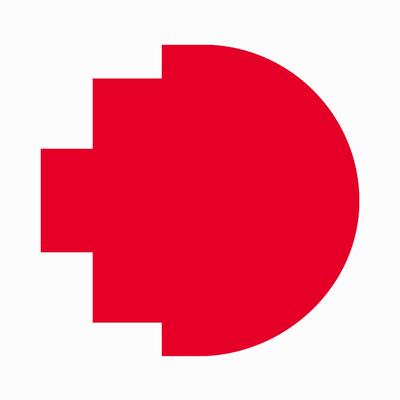

Assignment 1
Introduction to Information Technology
Lets Go!
My Journey Into IT
I first became interested in how IT can help workers when I decided to hack together an iOS application to automate fuel planning for the AP3C, which was the aircraft I was flying in 2016. It was a legacy aircraft where the fuel planning was still done with various lookup charts and tables, sometimes different versions of the same thing. I found I could save many minutes per day and even reduce the likelihood of error by translating the tables into equations with python and then creating a swift algorithm for use by the app. I really enjoyed both this analytical side and creating a user interface that makes the process as rapid as possible but not prone to error. At this stage, we were also introducing iPads to our everyday workflow and so there was constant interaction with emerging software.
Since then I realised I would enjoy being part of teams that can help automate work processes and make life easier for people. I am also fascinated by the area of cryptography and the possible applications for security and data integrity. My dream would be to help build a product with an invested and passionate user base where I could be a conduit between operators and engineers/developers.
Since then I realised I would enjoy being part of teams that can help automate work processes and make life easier for people. I am also fascinated by the area of cryptography and the possible applications for security and data integrity. My dream would be to help build a product with an invested and passionate user base where I could be a conduit between operators and engineers/developers.

Why RMIT?
I chose to study at RMIT because it has an excellent world-wide reputation in engineering and technology and I believe it can provide opportunities to build a strong foundation of skills for my future career. RMIT also seems to collaborate and share subjects with other universities, which makes a possible degree switch easier and offers broader experiences within one degree.
I hope to learn technical programming skills that can be applied in many different languages or frameworks that I might learn in the future. More importantly, in coming to university, I would like to explore different kinds of collaboration and teamwork management that can make the most of all talents and give me more future career leadership opportunities. Also, I hope to have a broad range of knowledge that might help me to better understand future colleagues who are outside of whatever technical area I choose to specialise in.
I hope to learn technical programming skills that can be applied in many different languages or frameworks that I might learn in the future. More importantly, in coming to university, I would like to explore different kinds of collaboration and teamwork management that can make the most of all talents and give me more future career leadership opportunities. Also, I hope to have a broad range of knowledge that might help me to better understand future colleagues who are outside of whatever technical area I choose to specialise in.
Dream Job - AGLive Product Manager
AGLive a blockchain company that is working on improving traceability and authentication of food chains. This genuine bringing of value to businesses and consumers inspires me.
The purpose of the role is to drive the product development and testing towards improved outcomes for the stakeholders involved and balance their competing needs. For the company this might mean profitability, scalability and marketability. For the end users this might be various considerations such as ease of use, security and value added.
What appeals to me is the wide range of influence from this role. For example, the advertisement lists very succinctly 5 different main areas of responsibility, each unique. For example, number 3 (Market research and A/B testing, analysis, etc) would require knowledge of this area along with creativity and at least basic technical knowledge of how this can be done.
This seems to be leadership position that calls on a good foundation of technical knowledge (so that the product and what is possible can be understood) along with less technical skills that make for strong collaboration and informed decision making for the direction of the product.
The purpose of the role is to drive the product development and testing towards improved outcomes for the stakeholders involved and balance their competing needs. For the company this might mean profitability, scalability and marketability. For the end users this might be various considerations such as ease of use, security and value added.
What appeals to me is the wide range of influence from this role. For example, the advertisement lists very succinctly 5 different main areas of responsibility, each unique. For example, number 3 (Market research and A/B testing, analysis, etc) would require knowledge of this area along with creativity and at least basic technical knowledge of how this can be done.
This seems to be leadership position that calls on a good foundation of technical knowledge (so that the product and what is possible can be understood) along with less technical skills that make for strong collaboration and informed decision making for the direction of the product.
Working towards AGLive
Required skills:
I will focus on developing the technical knowledge and team skills required for building IT products through this subject a future Bachelor of IT or Information Systems subjects. I also will take subjects that give more direct product management skills such as technical requirements, A/B testing, data analysis and competitive analysis. I would also like to take subjects that allow me to gain more knowledge of the business side of this job, at this stage I suspect this might include some marketing and business strategy content.
For my graduate jobs and internships I would like to work as a developer in small programming companies so that I can get more exposure to product management and progressively take on more product management responsibilities under mentorship.
Signal app are a non-profit company that is helping the world and would be an excellent alternative goal or could function as a stepping stone.
- Two years experience in product management of integrated software/hardware/service products
- Knowledge of blockchain technology and experience with data analysis software
- Independently motivated ‘team-player’ character who has worked in a startup or similar environment an is capable of uniting people and progressing the product
I will focus on developing the technical knowledge and team skills required for building IT products through this subject a future Bachelor of IT or Information Systems subjects. I also will take subjects that give more direct product management skills such as technical requirements, A/B testing, data analysis and competitive analysis. I would also like to take subjects that allow me to gain more knowledge of the business side of this job, at this stage I suspect this might include some marketing and business strategy content.
For my graduate jobs and internships I would like to work as a developer in small programming companies so that I can get more exposure to product management and progressively take on more product management responsibilities under mentorship.
Signal app are a non-profit company that is helping the world and would be an excellent alternative goal or could function as a stepping stone.

Personality Tests
Learning Styles:
Auditory: 0%
Visual: 60%
Tactile: 40%
Myers-Briggs: INTP-A
Creative Style: Creativity is a release
I think it is always helpful to reflect on personality traits, not to take them as gospel, but to consider my own behaviour more closely and how I might differ to other people. To know that other people hold different priorities and talents such as the Myers-briggs types described well in 16personalities.com
My visual and tactile learning styles suggest I should try to collaborate as much as possible with tools such as screen sharing and video conferencing and working together on items.
My Myers-briggs results suggest, as weaknesses, a tendency to be withdrawn or second-guess themselves. The energy of the diplomat (NF) types and the organisation of the sentinel (SJ) types might compensate for this, so a balanced group is important and also my own awareness of this. The results also support my confidence that I will add creative analysis and technical problem solving capacity to the team.
Myers-Briggs: INTP-A
Creative Style: Creativity is a release
I think it is always helpful to reflect on personality traits, not to take them as gospel, but to consider my own behaviour more closely and how I might differ to other people. To know that other people hold different priorities and talents such as the Myers-briggs types described well in 16personalities.com
My visual and tactile learning styles suggest I should try to collaborate as much as possible with tools such as screen sharing and video conferencing and working together on items.
My Myers-briggs results suggest, as weaknesses, a tendency to be withdrawn or second-guess themselves. The energy of the diplomat (NF) types and the organisation of the sentinel (SJ) types might compensate for this, so a balanced group is important and also my own awareness of this. The results also support my confidence that I will add creative analysis and technical problem solving capacity to the team.
Proposed Group Project
The project will be a iOS or ionic (cross platform) app that allows the user to automatically convert a series of tick boxes (that they can define) into sentences.
I have heard from a psychologist who regularly needs to write reports on the appearance and mannerisms of a patient which are very repetitive and follow the same structure each time. I suspect that there are other professions that have similar report writing needs and would be willing to pay for the time savings this software could give.
The features required are:
Programming skills are the main requirement but other skills will allow the app to take form more effectively. Prototyping and user outreach may prevent unnecessary code changes and design/presentation skills could help create awareness of the product and advertise it well on a website and the various app stores. In addition, coordination skills will greatly increase the efficiency of work. These skills are quite feasible within our group.
A successful app would allow many professionals to save work hours at a small cost and would help improve the world.
I have heard from a psychologist who regularly needs to write reports on the appearance and mannerisms of a patient which are very repetitive and follow the same structure each time. I suspect that there are other professions that have similar report writing needs and would be willing to pay for the time savings this software could give.
The features required are:
- A page for typing in the leading text for each series of tick boxes and the names for each tick boxes
- A page that allows the user to tick the relevant boxes in a easy to use format and clear the selections when done
- A page where the output text is displayed and the user can share or export the text quickly to add elsewhere
- An open and save button with associated save data storage
Programming skills are the main requirement but other skills will allow the app to take form more effectively. Prototyping and user outreach may prevent unnecessary code changes and design/presentation skills could help create awareness of the product and advertise it well on a website and the various app stores. In addition, coordination skills will greatly increase the efficiency of work. These skills are quite feasible within our group.
A successful app would allow many professionals to save work hours at a small cost and would help improve the world.